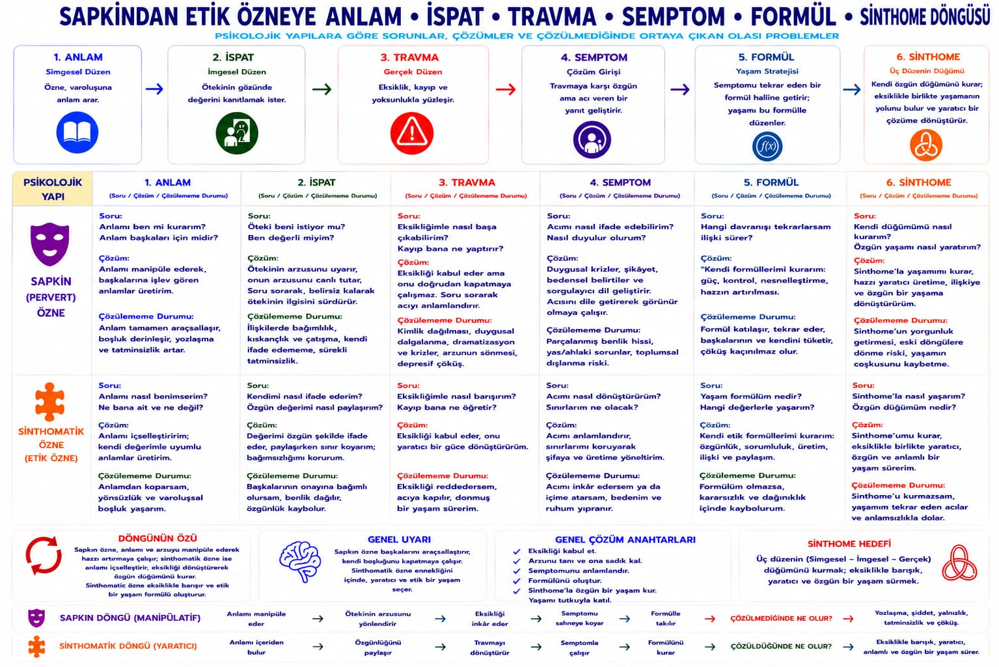

Yadsıma · sahne
Sapkın özne
Ahlaki hakaret değil: eksikliği yadsıyan ve Öteki'nin jouissance'ının aleti olmaya çalışan bir konum.
Freud'un fetişisti pekâlâ bilir, yine de. Fetiş hadım edilmeyi tıkar. Etik dönüş, sahne kurma yeteneğini insanları aksesuar etmeden kullanır.
